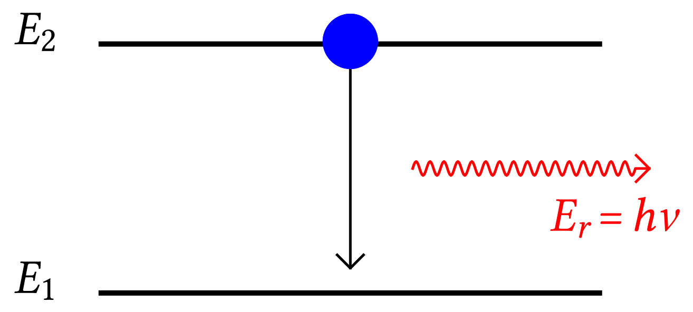

Depuis sa première réalisation expérimentale en 1960, le laser est devenu la source de lumière la plus importante dans les domaines scientifique et technique. Les propriétés de sa lumière sont telles qu'on l'utilise en médecine, dans l'industrie, dans les travaux publics et bien sûr dans le domaine de la recherche (fondamentale ou appliquée).
Le mot laser est un acronyme créé à partir des mots anglais « Light Amplification by Stimulated Emission of Radiation » ou amplification de la lumière par émission stimulée de lumière
1. « Lumière » est à prendre ici pour « onde électromagnétique » (ce n'est donc pas forcément de la lumière visible).
Un atome (ou plus largement un système microscopique : ion, molécule, ...) occupe généralement son état fondamental, d'énergie la plus basse (ici ). Lorsqu'il est excité, quel que soit le processus d'excitation (radiatif ou pas), il occupe un niveau d'énergie supérieure (ici ) pendant un temps très court (de l'ordre d'une dizaine de nanosecondes).
L'atome revient alors à son état fondamental en restituant l'énergie au milieu extérieur. Cette restitution peut se faire par l'émission d'un photon d'énergie : c'est l'émission spontanée.
|  |
Lorsque plusieurs atomes identiques se désexcitent, les photons émis ont même fréquence (fixée par la différence d'énergie entre les niveaux 1 et 2) mais des phases et des directions n'ayant aucun rapport entre elles : la lumière est dite incohérente.
L'émission spontanée est le processus d'émission de la lumière de quasiment toutes les sources de lumière.
Einstein a prédit, en 1917, qu'un second processus d'émission de la lumière, beaucoup moins probable peut exister : l'émission stimulée.
Pendant le cours laps de temps où il est excité, un atome (dans le niveau d'énergie ici) peut être percuté par un photon d'énergie . Ce dernier provoque alors la désexcitation de l'atome vers le niveau d'énergie avec émission d'un photon identique au photon ayant provoqué la désexcitation.
Les deux photons émis lors d'une émission stimulée présentent les mêmes fréquence , phase, direction, ... ils sont en tous points identiques la lumière est dite cohérente.
Dans un ensemble d'atomes en équilibre thermique, le nombre d'atomes (population), dont l'énergie correspond à un niveau donné, n'est pas quelconque. La population des niveaux décroît exponentiellement lorsque leur énergie augmente. Par exemple, la majorité des atomes d'une lampe à décharge sont dans leur état fondamental. Dans ces conditions, un photon incident a plus de chance d'être absorbé en faisant passer l'atome dans un état excité, que de provoquer l'émission stimulée… Il y a absorption du rayonnement incident.
Pour produire une émission stimulée efficace, il est nécessaire qu'il y ait plus d'atomes dans un état excité que d'atomes dans leur état fondamental : il faut provoquer une inversion de population. Dans ces conditions, pour un photon incident, la probabilité de produire une émission stimulée est plus grande que celle de subir une absorption ; au cours de la traversée du milieu l'intensité de la lumière va augmenter au lieu de diminuer : il y a alors amplification.
« Toutes les espèces d'atomes ne se prêtent pas à la réalisation de l'inversion de population. Prenons l'exemple du laser à rubis, premier laser expérimenté avec succès en 1960.
Dans ce rubis artificiel, sont inclus des ions chrome III. Ceux-ci présentent une transition radiative entre un niveau d'énergie et le niveau fondamental d'énergie , produisant un photon de longueur d'onde (rouge). Ils présentent, en outre, proche du niveau , une bande d'énergie composée d'un très grand nombre de niveaux proches les uns des autres. On peut donc exciter facilement les atomes sur l'un des niveaux de cette bande. En effet, si l'énergie nécessaire pour exciter un atome à un niveau d'énergie supérieure est bien définie, l'énergie nécessaire pour l'amener dans une bande d'énergie n'a pas à être aussi précise. Un flash suffisamment intense suffit pour faire passer pratiquement tous ces ions dans l'un des états excités de la bande (pompage optique). Ils perdent alors rapidement une fraction de leur énergie sous forme de vibrations du cristal et sont amenés au niveau d'énergie , sans émission de photon (transitions non radiatives).
La durée de vie de cet état excité est comparativement longue : , au lieu de pour le niveau de transit d'énergie . De nombreux atomes se trouvent ainsi « en attente », au niveau ; on a réalisé l'inversion de population sur ce niveau.
Si un photon d'énergie est émis, il peut alors provoquer, lors d'un choc avec un atome excité dans l'état , une émission stimulée. Celle-ci se renforce rapidement par une réaction en chaîne. On obtient ainsi un grand nombre de photons correspondant à des ondes de même fréquence , en phase et se propageant dans la même direction. »
Pour que le phénomène d'émission stimulée (ou induite) joue son rôle d'amplification, il faut que les photons effectuent plusieurs aller-retour dans le milieu actif, milieu dans lequel à été réalisée l'inversion de population.
Le milieu actif est alors placé entre deux miroirs parallèles, disposés orthogonalement à l'axe du barreau ou du tube. Après chaque réflexion, les photons, émis dans la direction perpendiculaire aux miroirs, traversent à nouveau le milieu actif, initiant d'autres émissions stimulées de photons : l'intensité du faisceau se renforce. Les photons se propageant dans des directions différentes s'échappent ou sont absorbés par les parois.
Pour que la lumière sorte du dispositif, un des miroirs est semi-réfléchissant : par exemple, en moyenne, 1 % du nombre total de photons incidents sur ce miroir s'échappe par celui-ci (peuvent le traverser). Une partie de l'énergie lumineuse est nécessairement perdue par émission du faisceau laser.
Pour entretenir le phénomène, il faut donc fournir de l'énergie à l'aide d'une source extérieure : c'est le rôle de la lampe (ou de la source d'alimentation du tube à décharge) flash illuminant périodiquement le milieu amplificateur pour maintenir l'inversion de population.
Un faisceau laser est beaucoup plus directif que le faisceau d'une lampe torche.
La lumière laser peut être quasi-monochromatique.
La lumière de tous les laser n'est pas forcément monochromatique : certains laser sont capables d'émettre de la lumière pendant une durée de l'ordre de la femtoseconde. La lumière est alors loin d'être monochromatique. À l'opposé, la lumière d'un laser hélium-néon est quasi-monochromatique : .
Un faisceau laser peut transporter une puissance surfacique (ou
intensité lumineuse) très importante.
Pour exemple, on peut calculer la puissance surfacique d'un laser hélium-néon utilisé dans un lycée. Sa puissance lumineuse moyenne est et le rayon de son faisceau (quasi cylindrique) est . On a donc . Cette grandeur est 4 fois supérieure à celle de la lumière issue du Soleil qui arrive sur Terre.
La plupart des lasers de puissance ne fonctionnent pas de manière continue (et ne sont donc pas monochromatiques). Ils émettent de brèves impulsions lumineuses dont la durée est comprise entre quelques microsecondes () et quelques femtosecondes (). La puissance transportée par chacune de ces impulsions est alors gigantesque et peut atteindre 100 TW ().